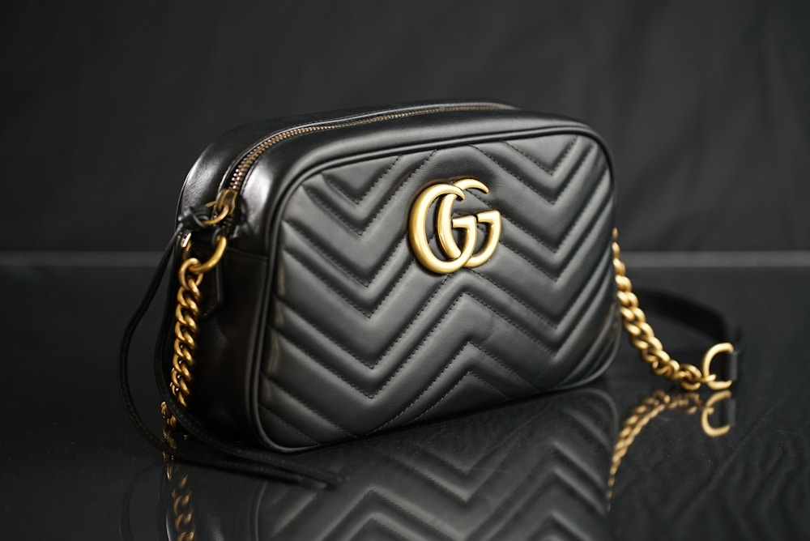

Our Lineage
The Warm Soul of Living Amber
Amber Purse Fox was founded to bring authentic, tactile luxury back to evening leathergoods. In a modern luxury landscape dominated by synthetic plastic polymers and machine-glued mass production, natural Baltic amber and vegetable-tanned bridle leather remain peerless materials.
Our master leather artisans hand-stitch every evening minaudière using beeswaxed French linen thread, mounting rare fossilized amber cabochons into custom solid brass bezels at our flagship SoHo atelier.
Visit Our Manhattan Amber Salon →